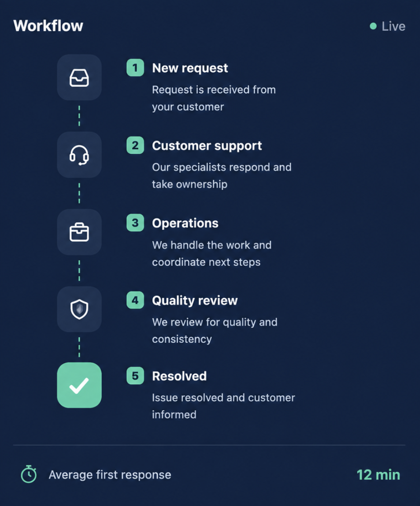

Atención al cliente
Equipos de soporte dedicados que brindan asistencia ágil a través de múltiples canales de comunicación.
Ayudamos a las empresas a ofrecer una atención al cliente ágil, una comunicación clara y un soporte operativo confiable mediante equipos dedicados y procesos bien definidos.
Nuestros servicios combinan atención al cliente, asistencia operativa y gestión de calidad para ayudar a las empresas a ofrecer experiencias consistentes todos los días.
Equipos de soporte dedicados que brindan asistencia ágil a través de múltiples canales de comunicación.
Coordinación administrativa, incorporaciones, gestión de procesos y soporte operativo para las tareas diarias.
Monitoreo de calidad, recursos de conocimiento, revisión de procesos y mejora continua del servicio.

Cada solicitud sigue un flujo de trabajo estructurado, con responsables definidos, procesos documentados y controles de calidad consistentes. Este enfoque permite ofrecer un soporte confiable desde la primera respuesta hasta la resolución final.
Analizamos tus canales de atención, necesidades operativas y expectativas de servicio.
Definimos flujos de trabajo, canales de comunicación, responsabilidades y lineamientos operativos.
Incorporamos al equipo, validamos los procesos y comenzamos la operación.
Supervisamos el desempeño, revisamos la calidad y optimizamos la operación de forma continua.
Soporte adaptado para empresas de todos los tamaños.
Ayudamos a los usuarios a comenzar con un proceso de incorporación estructurado y un soporte ágil.
Gestionamos consultas, coordinación interna y procesos operativos del día a día.
Mantenemos la calidad del servicio mediante revisiones de procesos, monitoreo y mejora continua.